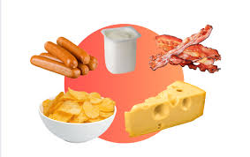
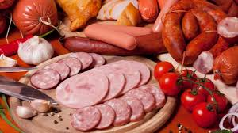

conhecendo os alimentos do natural aos indrustralizados
Alimentos Processados Os alimentos processados são produzidos a partir de alimentos naturais com adição de ingredientes como sal, açúcar ou óleo para aumentar a durabilidade e melhorar o sabor. Exemplos: Pães Queijos Conservas Molho de tomate Frutas em calda Embora possam fazer parte da alimentação, o consumo deve ser moderado. Cuidados: Verificar a quantidade de sal e açúcar Preferir opções com menos ingredientes Evitar consumo excessivo O equilíbrio é essencial para manter hábitos saudáveis.


